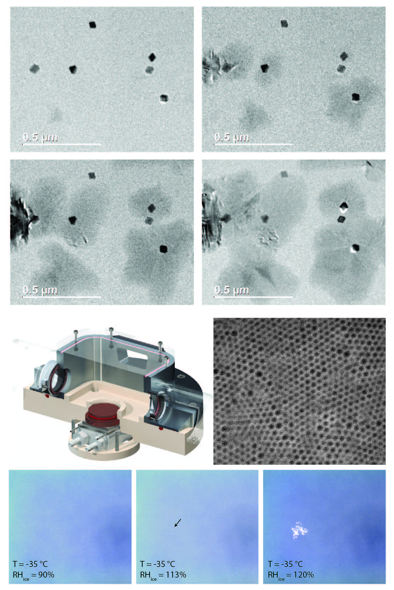

postdoctorate research
 Clouds control Earth's weather and climate. They cool the atmosphere by reflecting infrared solar radiation and warm the planet's surface by trapping infrared radiation. The nucleation of water droplets and ice crystals within clouds produce rain and snow that dominate the Earth's weather and shape its landscape. Our ability to model the global influence of clouds on weather patterns and climate change is limited by a lack of understanding of the small-scale processes that control clouds, particularly the processes that are responsible for heterogeneous nucleation of water droplets and ice crystals on aerosol particles. The goal my research is to develop a multi-model approach to investigate the role of nanopores and surface roughness on heterogeneous nucleation of ice crystals on atmospheric aerosols. Water condensation and subsequent freezing in nanopores is suspected to play an important role in promoting heterogeneous ice nucleation on atmospheric aerosols, a process called pore condensation freezing.{kind=link}
Using in situ environmental transmission electron microscopy I can directly study the ice nucleation process on natural and model aerosol particles in situ with near-molecular resolution. To gain further insight into the pore condensation and ice nucleation process I designed and built a low temperature humidity controlled specular reflection infrared spectroscopy cell that sits in a commercial FTIR spectrometer. With this instrument I can probe the state of adsorbed and pore condensed water during the process of capillary condensation and freezing in pores prior to the onset of ice nucleation on model nanoporous thin films and nanoparticles across a wide range of atmospherically relevant humidity and temperature conditions. These techniques enable the development of a fundamental understanding of heterogeneous ice nucleation and determine the influence of surface roughness and nanopores. In parallel, atom-probe tomography is being applied to investigate the nanoscale structural and chemical changes that aerosols undergo during exposure to atmospheric conditions and correlate these changes with ice nucleation capacity.
graduate research
 Biological organisms have a remarkable ability to control the structure and properties of inorganic minerals across a wide range of length scales from nano- to macro-scale. In many cases, an organic matrix comprised of a variety of macromolecules interacting with the forming mineral is responsible for the control over the morphology and the polymorph of the mineral. For example, in the tooth of the chiton the mineralization occurs within a preformed organic matrix. This organic matrix, composed of the polysaccharide chitin and several proteins, is responsible for controlling the mineral deposition. As the tooth matures, the organic matrix is incorporated into the forming mineral. The outstanding fracture toughness and wear resistance of the tooth results from the organic-inorganic interfaces over multiple levels of hierarchy (i.e. intra- and inter-crystalline) that deflect and arrest cracks.
Biological organisms have a remarkable ability to control the structure and properties of inorganic minerals across a wide range of length scales from nano- to macro-scale. In many cases, an organic matrix comprised of a variety of macromolecules interacting with the forming mineral is responsible for the control over the morphology and the polymorph of the mineral. For example, in the tooth of the chiton the mineralization occurs within a preformed organic matrix. This organic matrix, composed of the polysaccharide chitin and several proteins, is responsible for controlling the mineral deposition. As the tooth matures, the organic matrix is incorporated into the forming mineral. The outstanding fracture toughness and wear resistance of the tooth results from the organic-inorganic interfaces over multiple levels of hierarchy (i.e. intra- and inter-crystalline) that deflect and arrest cracks.
An in-depth understanding of nucleation, growth, and the advanced material properties resulting from interfaces at several length scales depends on the ability to characterize the interactions across these organic-inorganic interfaces. Atom probe tomography (APT) is uniquely capable of providing structural insight at the atomic scale by directly mapping the location and chemical identity of the atoms within a small sample of material, usually a metal or semi-conductor.
An atom probe is a point projection microscope where, in the presence of a very high electric field, individual atoms or molecules sequentially field-evaporate from a sharp tip and are projected onto a 2D position sensitive detector. The mass-to-charge state ratio (m/z) and thus the chemical identity of each ion are determined by time-of-flight (TOF) mass-spectrometry using timed picosecond laser pulses to trigger evaporation events. In combination with the sequence of evaporation events and their location on the detector, this allows reconstructing the 3D structure of the sample, atom by atom. APT analyzes volumes on the order of 105 nm3 with sub-nanometer resolution.
Recent advances in atom probe technology, including improvements in laser pulsing, have enabled the atom probe to study bulk materials with high resistivity. Examples include numerous metal and semiconductor oxides and polymers . We use a pulsed laser atom probe was used to characterize the buried organic-inorganic interfaces within biological minerals. We demonstrated the applicability of the technique using the tooth cap of the chiton (Figure 1A-B) a magnetite-organic composite, containing numerous nanoscale organic fibers (Figure 1C). 3D Atom probe reconstructions of the chiton tooth (Figure 1D) reveal the organic fibers and enable sub-nanometer resolution chemical mapping of the inorganic-organic interface. We are currently working to extend the approach to other biomineral systems where organic/inorganic interfaces play an important role.
media coverage
Mitch Jacoby, Chemical & Engineering News
Featured on C&EN front page cache
{kind=link}
link
Alyssa Botelho, New Scientist
Featured on Newscientist.com front page cache
{kind=link}
link pdf
Susan Reiss, Research.gov
link
Nadia Drake, Wired
Featured on Wired.com front page cache
{kind=link}
link
Mitch Jacoby, Chemical & Engineering News
link
Joe Palca, National Public Radio
link mp3 transcript
Kerri Smith, Nature Podcast
link mp3
US News: Science
link
Nikon Small World Photomicrography Competition
link image
{kind=link}